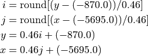
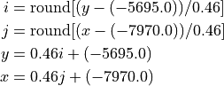

Coordinate Systems
Our pipeline computes transformations between pairs of spaces. Each space can include one or more images that are sampled on the same voxel grid. Spaces are defined by an origin and an orientation, and often a voxel size. Depending on conventions, these may be specified relative to anatomy in an image (common for atlases) or relative to the sampling grid the image was obtained on. The latter case is common because generally we don’t know where the anatomy is until after we have solved a registeration problem.
Atlas spaces
Coordinate systems associated with several different atlases are described here.
Mouse atlas
We adopt the Allen Institute’s Common Coordinate Framework (CCF) atlas, and use its structure annotations, its 3D Nissl image, and its 3D STPT average template image.
Note that the STPT image and annotations are left right symmetric in this data. Nissl images are not left right symmetric.
The CCF NRRD files do not specify a coordinate system correctly. We build our own right handed coordinate system which is described below.
FIGURE HERE.
Coordinate directions
We chose “x” to point from the brain’s superior to inferior, “y” to point from the brain’s left to right (note this is often displayed by pointing from the right side of the screen to the left, i.e. radiological convention), and “z” to point from posterior to anterior (caudal to rostral).
Coordinate origin
We chose “x” to point from the brain’s superior to inferior, “y” to point from the brain’s left to right (note this is often displayed by pointing from the right side of the screen to the left, i.e. radiological convention), and “z” to point from posterior to anterior (caudal to rostral).
We choose the coordinate origin to be our best estimate of the bregma location, based on previous mappings to MR data with skull. Location on Average Template (volume size 8 x 11.4 x 13.2 mm): * x=930 µm from dorsal end of the volume * y=5700 µm from right end of the volume * z=8000 µm from posterior end of the volume
Pixel size
This dataset is available in 10, 25, 50, and 100 micron isotropic voxel size. We typically perform registration at 50 microns.
Other information
Warning
Different versions of annotations are available. Unless otherwise specified, we use CCF version 3. This can be downloaded here: http://download.alleninstitute.org/informatics-archive/current-release/mouse_ccf/annotation/ccf_2017/ Note, as of March 2023, there is a new version of annotations called 2022. But we are not using that version.
Note
On CSH server: /nfs/data/main/M32/RegistrationData/ATLAS/annotation_50_bregma_LR.vtk /nfs/data/main/M32/RegistrationData/ATLAS/ara_nissl_50_bregma.vtk /nfs/data/main/M32/RegistrationData/ATLAS/average_template_50_bregma.vtk
Marmoset atlas
For marmoset we typically use the RIKEN atlas described in Woodward 2018 (https://www.nature.com/articles/sdata20189).
FIGURE HERE.
Coordinate directions
We use an RAS (right, anterior, superior) coordinate system where the “x” direction points from left to right, the “y” direction points from posterior to anterior, and the “z” direction points from inferior to superior.
Coordinate origin
In the common marmoset, the horizontal zero plane is defined as the plane passing through the lower margin of the orbit and the center of the external auditory meatus (Figure B) (note you cannot see bregma on marmoset, it is fused too tightly to see). In an imaging apparatus, the skull is fixed through the ears, so this is a good choice. The anteroposterior zero plane is defined as the plane perpendicular to the horizontal zero plane which passes the centers of the external auditory meati. The left-right zero plane is the midsagittal plane (Saavedra and Mazzuchelli, 1969; Stephan et al., 1980).
See figure 6
Other information
Note
On our CSH dropbox system the atlas data is located here: https://www.dropbox.com/sh/70hg40e8b3ro9vx/AACk05Hm-BFGbMD5NIQolqtxa?dl=0 with images:
Nissl reference: bma-1-nissl.nii.gz
MRI reference: bma-1-mri.nii.gz
Atlas: bma-1-region_seg.nii.gz
Note
We have built a population average image for males and females, which is located on CSH at /nfs/data/main/M38/marmoset_ccf
Human atlas
We use the Montreal Neurological Institute - International Consortium for Brain Mapping (MNI-ICBM) coordinate system, which is described here: https://www.mcgill.ca/bic/software/tools-data-analysis/anatomical-mri/atlases/icbm152-non-linear .
figure here
Coordinate directions
The atlas is based on the Talarach Tournoux coordinate system which is RAS. “x” points from left to right, “y” points from posterior to anterior (posterior commissure to anterior commissure), and “z” points from inferior to superior.
Coordinate origin
The coordinate origin is 4 millimeters above the center of the anterior commissure.
Details: these points are intersection of planes. AC to PC defines a line. Left right defines a line. These two lines define a plane.
Midsagittal plane defines another plane.
The intersection defines a line, and the left right center on this line gives the origin.
Voxel size
Standard voxel size is 1mm isotropic, but other possibilities are available.
Other information
Currently can be downloaded form the web at the above link https://www.mcgill.ca/bic/software/tools-data-analysis/anatomical-mri/atlases/icbm152-non-linear .
Note
Jai suggests MNI-Colin27 and not ICBM152 nonlinear. Human brain project uses this. Maybe we will prefer this one. https://www.mcgill.ca/bic/software/tools-data-analysis/anatomical-mri/atlases/colin-27-2008
Note that the difference is the 4mm offset.
Input space
The input space describes the coordinate system of 2D serial section images to be registered. This is the internal structure of the pipeline, but preprocessors may be used to convert data with other structures. For example, point sets may be described by the integer index of a pixel in an image, rather than a location with units of length. A converter is necessary in this case (for example emlddmm.convert_points_from_json())
Coordinate directions
The “x” coordinate points from left to right (i.e. from the left side to the right side of a 2D image displayed on a screen). The “y” coordinate points from up to down. The “z” coordinate points from the first acquired slice to the last acquired slice.
Note
This convention does not reference any anatomy, only the camera. This is chosen because sections could have any orientation (coronal, sagittal, etc.).
Coordinate origin
The xy origin will always be in the center of the image. i.e. On a given slice if you find the average “x” coordinate, or the average “y” coordinate, it will be 0. The z coordinate origin is also chosen such that slices are centered for this dataset: the average of the z coordinate for the first and last slices is zero.
Note
Motivation for this choice is that we can pad images symmetrically without changing the origin, and rotation about this origin is more numerically stable than rotation around one corner.
Voxel size
Voxel size is an input parameter to the pipeline (e.g. stored in json sidecar files for 2D images, or in vtk headers for 3D images). Our convention is to use units of microns.
Note
In a typical workflow, an image is created with resolution 0.46umx0.46micron, with a slice thickness of 10 micron. For registration purposes these are typically downsampled by a factor of 32 in the x and y directions, making the resolution 14.72um before they are input to the pipeline.
Example dataset: Mouse coronal
TODO figure with arrows
Example dataset: Mouse sagittal
TODO figure with arrows
Example dataset: Mouse transverse
TODO figure with arrows
Registered space
In our workflow, any time a 3D to sequence of 2D slices map is calculated, a new registered space is created (see for example here). A sequence of rigid transformations are applied to each 2D slice to match the general shape of a deformed reference 3D image. This effectively defines a 3D coordinate space.
Coordinate directions
Same as input space directions.
Coordinate origin
Same as input space origin.
Voxel size
Same as input space voxel size.
Note
Once transformations have been computed, high resolution data is transformed into registered space for display on the web or other viewers. This high resolution data uses its native voxel size (typically 0.46 microns).
The non-uniqueness of registered space
Our mapping algorithm enforces alignment between data in the common space, and data in the input space. This sequence of transforms can be factored to define a space in the “middle”. This is a factorization of transformations problem. Just like matrix factorizations are not unique without constraints, the data does not uniquely define a registered space. Rather, we use several heuristics to define a space that is a “minimally distorted” version of the common space. The general idea is that any component of the transform that can be represented as a sequence of 2D transforms, should be represented that way, rather than as part of a 3D transform. In particular
We want no translation in the xy direction of the 3D affine transformation. (this is enforced by our pipeline)
We want no shear perpendicular to the z axis in the 3D transformation. (this can be enforced by chosing to limit the affine transformation to rigid, or rigid plus scale)
After applying our affine transform we want the up vector to still point up, when projected into the slice plane. (not currently implemented)
Other information
While registered space uses the same coordinate system conventions as input space, the set of voxel locations images should be sampled on is likely to be different. One example occurs when our atlas has its origin at the bregma point on the skull, but our input data has its origin in the center of the brain tissue. Due to our factorization conventions described above, tissue in registered space will no longer be centered at the origin.
In a typical situation, our input histology is sectioned in either the coronal, sagittal, or transverse plane, and we map it to a well characterized atlas. In these situations, the origin in xy for the registered space can be interpretted with respect to the atlas origin, and will correspond to the origin for two of the 3 axes in the atlas. We enumerate sevaral cases below and provide some information explicitly.
Mouse with coronal sections
Using our Mouse atlas, and a coronally sectioned dataset in Input space, input space x corresponds to the right left axis, and input space y corresponds to the dorsal ventral axis.
Therefore, the x=0 point in registered space corresponds to the anatomy at the y=0 point in the atlas, and the y=0 point in registered space corresponds to the anatomy at the x=0 point in the atlas.
When reconstructing imaging data in this space we chose a set of sample points for voxels that will cover the anatomy. Therefore, we sample x starting at -5695.0 um, ending at 5695.06, and using 24762 samples equally spaced by 0.46 microns. Similarly, we sample y starting at -870.0 um, ending at 7120.2 um, and using 17371 samples equally spaced by 0.46 microns.
This convention allows us to convert between spatial locations and pixel indices (row=i,col=j, starting at 0), using the follow formulas:

Mouse with sagittal sections
Using our Mouse atlas, and a sagittaly sectioned dataset in Input space, input space x corresponds to the anterior posterior axis (CHECK!), and input space y corresponds to the dorsal ventral axis.
Therefore, the x=0 point in registered space corresponds to the anatomy at the z=0 point in the atlas, and the y=0 point in registered space corresponds to the anatomy at the x=0 point in the atlas.
When reconstructing imaging data in this space we chose a set of sample points for voxels that will cover the anatomy. Therefore, we sample x starting at -7970.0 um, ending at 5220.04, and using 28675 samples equally spaced by 0.46 microns. Similarly, we sample y starting at -870.0 um, ending at 7120.2 um, and using 17371 samples equally spaced by 0.46 microns.
This convention allows us to convert between spatial locations and pixel indices (row=i,col=j, starting at 0), using the follow formulas:
Mouse with transverse sections
Using our Mouse atlas, and a transverse sectioned dataset in Input space, input space x corresponds to the anterior posterior axis (CHECK!), and input space y corresponds to the right left axis.
Therefore, the x=0 point in registered space corresponds to the anatomy at the z=0 point in the atlas, and the y=0 point in registered space corresponds to the anatomy at the y=0 point in the atlas.
When reconstructing imaging data in this space we chose a set of sample points for voxels that will cover the anatomy. Therefore, we sample x starting at -7970.0 um, ending at 5220.04, and using 28675 samples equally spaced by 0.46 microns. Similarly, we sample y starting at -5695.0 um, ending at 5695.09 um, and using 24762 samples equally spaced by 0.46 microns.
This convention allows us to convert between spatial locations and pixel indices (row=i,col=j, starting at 0), using the follow formulas:
